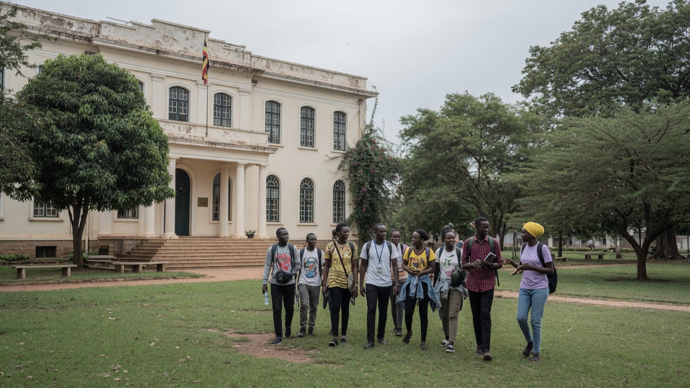

From the kingdoms of the lakes to a republic of 45.9 million — the story Uganda tells itself, and the world.
Chapters7
Census 202445.9m
Independence9 Oct
MottoFor God & my Country
Impressions of the pearl
What the world first sees
Winston Churchill, travelling Uganda in 1907, wrote that the kingdom was a fairy-tale — “from end to end it is unique.” He called it the pearl of Africa. The impressions have not dimmed.
Source of the Nile Jinja, where Lake Victoria becomes the Victoria Nile. John Hanning Speke reached the outlet on 28 July 1862.Crested crane Balearica regulorum — on the flag, the coat of arms and the currency. The bird that would not fly from a fight.Royal drums Engoma of the kingdoms — Buganda, Bunyoro-Kitara, Tooro, Nkore, Busoga. Authority was heard before it was seen.Independence Monument A nation reaching upward — 9 October 1962. Photo via the official Media Centre record.The parade Ceremonial guard of the republic. The same colours as the flag: black, gold and red.The garden Coffee, tea, matooke, millet. The highlands that fed kingdoms and still feed the republic.
Chapter 01 · Before the protectorate
01
Kingdoms of the lakes
Long before a border was drawn at the Nile, this country was a mosaic of kingdoms and chiefdoms. Bunyoro-Kitara — Bachwezi memory, then the Babiito dynasty — held the salt of Kibiro and the iron of the hills. Buganda, organised by clan and kabaka, grew from the kibuga at Mengo into the most centralised state on the northern shore of Nalubaale, the lake the world would call Victoria.
Tooro broke from Bunyoro around 1830 under Prince Kaboyo. Nkore (Ankole) kept the omugabe. Busoga was a confederation of chiefdoms, later a kyabazinga. North of the Nile, Luo-speaking Acholi, Langi and Alur built different polities; the Karimojong kept cattle on the eastern plains; Bakonzo held the Rwenzori. Barkcloth, ivory, iron and salt moved on paths older than any gazette.
Buganda · 52 clansBunyoro-Kitara · BabiitoTooro · c. 1830Nalubaale · Lake Victoria
Plate 01 / 07 · The drum was the state. When it sounded, the kingdom was present.
Chapter 02 · 1894–1962
02
The British Protectorate
On 18 June 1894 Uganda was declared a British Protectorate, after the Imperial British East Africa Company had already planted a flag. The Buganda Agreement of 10 March 1900 locked mailo land and a native government into colonial law. Toro (1900/1901) and later Bunyoro signed their own agreements. The railway from Mombasa reached the lake in 1901; steamers finished the journey to Entebbe and Kampala.
Cotton (from 1903) and highland coffee paid the protectorate. Makerere Technical School opened in 1922 and became a university college in 1949 — the intellectual capital of East Africa. Politics arrived as parties: Uganda National Congress (1952), Democratic Party (1954), Uganda People’s Congress (1960), Kabaka Yekka. The Kabaka crisis of 1953–55 — Muteesa II exiled by Governor Andrew Cohen, then returned — taught the country that the throne and the governor would not share a house forever.
18 June 1894Buganda Agreement 1900Makerere 1922Kabaka crisis 1953–55

Plate 02 / 07 · Makerere made a country that could argue with its governors.
Chapter 03 · 9 October 1962
03
Independence
At midnight on 9 October 1962 the Union Jack came down over Kololo. Apolo Milton Obote, leader of the UPC in alliance with Kabaka Yekka, became the first Prime Minister. Sir Walter Coutts remained Governor-General for a year. On 9 October 1963 Uganda became a republic and Sir Edward Muteesa II, Kabaka of Buganda, the first President.
The flag — black, gold and red, the grey crowned crane in the centre — was the colour of the soil, the sun, and the blood of brotherhood. The anthem, Oh Uganda, Land of Beauty, was composed by George Wilberforce Kakoma: “Oh Uganda! May God uphold thee, we lay our future in thy hand.” Gregory Maloba’s Independence Monument still stands in Kampala: a nation lifting its child.
Oh Uganda, the land of freedom, our love and labour we give.
9 Oct 1962Obote · first PMMuteesa II · first President, 1963Anthem · G.W. Kakoma
Plate 03 / 07 · Sir Edward Muteesa II inspects a guard of honour, 1962. Photo: public domain, via Wikimedia Commons.
Chapter 04 · 1966–1979
04
The storm years
The alliance did not last. In May 1966 the army stormed the Lubiri at Mengo. Muteesa fled. The 1967 Constitution abolished the kingdoms. On 25 January 1971, while Obote was in Singapore, Idi Amin Dada seized the state.
In August 1972 Amin ordered the expulsion of Uganda’s Asian community — some 80,000 people given 90 days to leave. The economy hollowed. In July 1976 Israeli commandos struck Entebbe. In October 1978 Amin’s army crossed into Tanzania’s Kagera salient; Tanzania and the Uganda National Liberation Front took Kampala on 11 April 1979. The storm did not end with Amin. It ended, years later, when a different army walked in from the bush.
Lubiri · 24 May 1966Amin coup · 25 Jan 1971Asian expulsion · 1972Kampala falls · 11 Apr 1979
Plate 04 / 07 · A chapter kept without a portrait. The record is the people who endured it.
Chapter 05 · 26 January 1986
05
Reconstruction
From 1981 the National Resistance Army fought a guerrilla war out of the Luweero Triangle. On 26 January 1986 it entered Kampala. Yoweri Kaguta Museveni became President. The Ten-Point Programme promised a country that would not again be organised by tribe or confession, and an economy rebuilt from wreckage.
Security returned in stages. Roads, schools and clinics followed. The Movement system governed without registered parties until the country was ready to argue again. The impression of those years, for millions who remember them, is simple: the guns went quiet, and children walked to school.
26 Jan 1986Ten-Point ProgrammeLuweero to KampalaNRM government
Plate 05 / 07 · Ceremonial guard of the republic. Photo: Xinhua News, via the official Media Centre record.
Chapter 06 · 1993–1995
06
The Constitution, and the drums return
In 1993 the Traditional Rulers (Restitution of Assets and Properties) Statute restored the kingdoms as cultural institutions. The kabaka returned to Mengo. Bunyoro, Tooro, Busoga and others followed. The drums were legal again — as heritage, not as rival states.
On 8 October 1995 Uganda promulgated a new Constitution: a bill of rights, a directly elected president, a parliament, and a Third Schedule naming 56 indigenous communities. The first direct presidential election followed in 1996. Universal Primary Education began in 1997. A 2005 referendum restored multi-party politics. Universal Secondary Education followed in 2007.
Kingdoms restored 1993Constitution · 8 Oct 1995UPE 1997Multi-party 2005
Plate 06 / 07 · Independence Monument — the day of 1962, under the law of 1995.
Chapter 07 · This generation
07
Vision 2040, and 45.9 million names
The National Population and Housing Census 2024 — Uganda’s first digital census, enumerated in May — counted 45,905,417 people (Uganda Bureau of Statistics, final report). That is 11.3 million more than 2014. Half are under eighteen. Wakiso is the most populous district; Kampala the capital of 1.9 million residents. English and Kiswahili are official languages; the Languages Desk of this Centre keeps forty-one tongues on the wire.
Vision 2040 aims at an upper-middle-income country. The Parish Development Model puts wealth creation in 10,594 parishes. The Albertine Graben holds oil — Tilenga, Kingfisher, the East African Crude Oil Pipeline. Karuma (600 MW), Isimba (183 MW) and Bujagali (250 MW) light the grid. Bwindi keeps the mountain gorilla; the Rwenzori keeps the snow; Jinja keeps the Nile. The Media Centre’s charge, in the Executive Director’s words, is not public relations. It is to tell that story until the world can say it back.